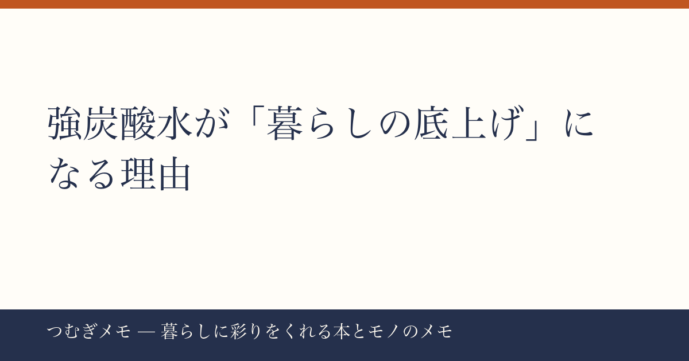

こんにちは、つむぎです。今週の楽天ランキングを眺めていたら、あることに気づいて思わずメモを開きました。この記事でわかること：500ml×48本の炭酸水が今週だけでランキング3位を獲得した背景と、「水」という日用品が生活の質に直結する仕組み、そして今日から始められる炭酸水習慣の整え方。
今週の要点
- 炭酸水48本セット（OZA SOD）がレビュー17,566件・★4.67で楽天3位に急浮上
- 強炭酸×無糖という組み合わせが「砂糖を減らしたい」需要と「飲みごたえ」需要を同時に満たしている
- まとめ買いで"選ぶコスト"を消すことが、習慣化の一番の近道
---
今週の楽天総合ランキングで、強炭酸水500ml×48本セット（OZA SOD）が3位に入った。レビュー件数は17,566件、平均評価は★4.67。これは食品カテゴリのなかでもかなり異例の数字で、同じランキング内にあるコンタクトレンズ（90枚パック2箱セット）が複数品ランクインするほど消耗品需要が強い週においても、炭酸水は食品として唯一トップ10に食い込んでいる。
さらにセール価格が「2,399円〜」という設定で、9月15日23:59までという期限がある。送料無料、かつ48本という圧倒的な量。「クリック1回で2週間分の炭酸水が届く」という状況が生まれている。
気になるのは、なぜこの週にこれが刺さったのか、だ。
---
分析してみると、強炭酸×無糖の組み合わせが今の20〜40代にこれほど響く理由は、単なるブームではない気がする。
ここ数年、甘い飲み物を毎日飲む習慣を「見直したい」という意識は確実に広がっている。とはいえ、水だけだと「なんか物足りない」。食事中や仕事の合間に、ただの水では気分が上がらない。そこへ強炭酸水が「満足感のある水」として機能する。
飲食店で頼むような炭酸飲料と違い、無糖ならカロリーも糖質もゼロ。それでいて、シュワシュワの刺激が「ちゃんと飲んだ」という感覚を与えてくれる。つまり強炭酸水は「我慢の代替品」ではなく、「そのもので満足できる選択肢」として成立している。この点が、置き換え系の健康習慣としてうまく機能している理由だと思う。
また、9月という時期も見逃せない。夏の間は冷たいものを飲む機会が多く、そのまま炭酸水を常備する習慣がついた人が、秋に向けて「定期的にまとめ買いしよう」と移行するタイミングが今週にあたっている可能性がある。
今日できること： 試したことがない人は、まず12本や24本の小ロットから始めてみる。ただし、コスト面では48本まとめ買いが圧倒的に合理的なので、「確実に飲める」と判断したらそちらへ移行する、という二段階戦略が現実的。
---
炭酸水に限らず、今週のランキングで目立つのは「大容量・まとめ買い」商品の強さだ。コンタクトレンズも90枚入り2箱セットが複数品同時にランクインしており、「次いつ買うか考えなくていい状態」への需要が一貫して高い。
これは暮らしの設計という視点から見ると、かなり重要なことを示唆している。
「選ぶ」という行為は、思っている以上にエネルギーを使う。毎日「今日は何を飲もうか」「炭酸水そろそろ切れそう、買わないと」と考えるのは、小さいけれど積み重なるコストだ。まとめ買いはそれを一気にゼロにする。冷蔵庫や棚に常にある状態にしておくだけで、「よい習慣が継続しやすい環境」が物理的に整う。
行動科学的に言えば、習慣の継続には「摩擦を減らすこと」が最も効果的だという調査結果も報じられている。炭酸水をまとめ買いするのは、まさにその摩擦を減らす行為そのものだ。
読書習慣でよく言われる「本を枕元に置いておく」という話と構造は同じ。「意志力に頼らず、環境で行動を引き出す」。
今日できること： 飲み物に限らず、「毎週買っているのに買い忘れることがある」ものを1品だけピックアップして、今月中にまとめ買いに切り替えてみる。最初の一品として炭酸水は実験しやすい（賞味期限が長く、かさばるが重さは一定）。
---
少し大きい話をしたい。暮らしに彩りを添えるというと、新しい体験や特別なアイテムを想像しがちだ。でも実際には、「毎日使うものの質を固定する」こと自体が生活の豊かさを静かに上げていく。
たとえば、毎朝飲む水のブランドを決める。コーヒーのグラインダーを一度選んだらしばらく変えない。シャンプーを数年同じものにする。こうやって「定番」を決めていくと、日常の中に「自分が意図して選んだもの」が増えていく。それが積み重なると、なんとなく生活に芯が通ってくる感覚がある。
炭酸水を48本まとめ買いして定番にするという行為は、食品ひとつの話でありながら、暮らしの設計としての意思決定でもある。「自分はこれを飲む人間だ」という小さな宣言。そういう積み重ねが、「生活がちょっと豊かになった」という感覚の正体だと、僕は思っている。
今日できること： 今週のセール期限（9/15 23:59）を一つのきっかけとして、「飲み物の定番を決める」という意思決定をしてみる。炭酸水でなくてもいい。「これを飲む」と決めるだけで、毎日の小さな迷いがひとつ消える。
---
Q. 強炭酸と普通の炭酸水、どっちがいいですか？
好みによりますが、「炭酸で満足感を得たい」「甘い飲み物の置き換えにしたい」という用途なら強炭酸のほうが向いています。刺激が強い分、少量でも「飲んだ感」があります。胃が弱い方や食事中に使いたい場合は、弱炭酸や微炭酸のほうが長続きしやすいです。
Q. 48本は多すぎませんか？保管場所が心配です。
500ml×48本は、ダンボール2箱分になります。重さは24kg程度になるので、床置きが基本です。玄関の脇、クローゼットの隅、洗面台下など「取り出しやすくて邪魔にならない場所」を先に決めてから注文するのが現実的です。毎日2本飲むなら24日でなくなる計算なので、置き場さえ確保できれば意外と早く消費します。
Q. セールが終わったら買うべきじゃないですか？
「セール価格だから買う」という動機でまとめ買いをすると、習慣化には繋がりにくいです。セールはきっかけとして使いつつ、「炭酸水を定番にする」という決断を先にするのがおすすめ。通常価格でも合うなら定番にする価値があるし、合わなければセール中でも買い続ける理由がないはずです。
---
今週は「強炭酸水のまとめ買い」というひとつの切り口から、習慣設計と暮らしの豊かさについて書いてみました。日用品の話をしているようで、実は「どう選ぶか」「どう整えるか」という暮らしの姿勢の話だったりします。
なお「つむぎメモ」は現在、僕の視点とAIとの対話を組み合わせながら記事を作る実験的な運営をしています。情報の選び方や言葉の整理にAIのサポートを活用しつつ、判断と文章の軸は自分で持つ、というスタイルを試しています。気になった方はXでも気軽に話しかけてください（@tsumugi_memo15）。
📚 目次へ